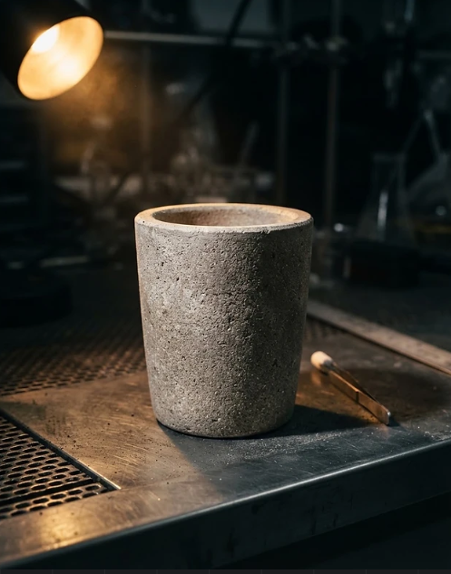

Resistência térmica
Peças formuladas para operar em regimes de alta temperatura.
Cerâmica Gramanse Ltda.
Fabricamos peças cerâmicas refratárias para fundições e empresas do setor metalúrgico, além de peças técnicas para laboratórios de análise de carbono e enxofre e peças destinadas ao uso em aquários.

Segmentos atendidos
Selecione o segmento de atuação e encontre a linha de produto correspondente.

O que nos diferencia
Experiência e controle em cada etapa para entregar peças que acompanham a exigência do seu processo.
Conheça a Gramanse ↗Peças formuladas para operar em regimes de alta temperatura.
Produção conforme dimensões e requisitos de cada aplicação.
Atendimento a fundições, metalurgia e laboratórios de análise.
Suporte direto na especificação e no envio do orçamento.
Vamos conversar
Envie sua especificação e nossa equipe retorna com o orçamento e as orientações técnicas.
Solicitar orçamento ↗